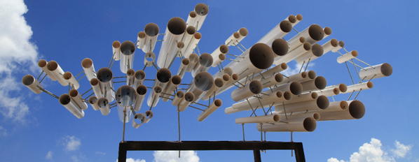
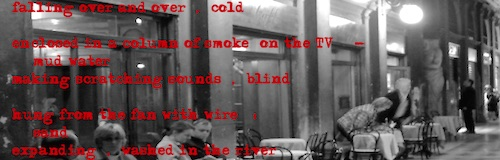
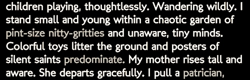
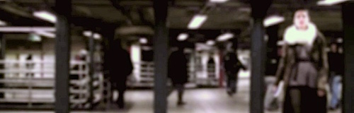
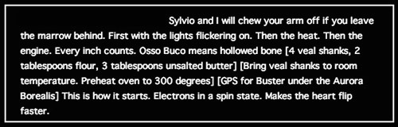
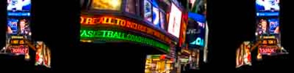
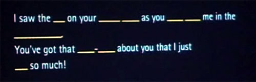
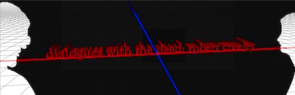

Selected Student Work
Morphosis
by Chen Qianxun
A generative writing project exploring the boundaries of language and the aesthetics of online machine translation. In the trail of continuous translation, there are replacements of words, changes in sentence structure, sudden occurrences of absurdity. The text evolves like a creature with a heartbeat, created via the collective consciousness of language everywhere.

The Telescopes
by Fuk Kuen Wong
This sculpture, created from simple hollow tubes, bring us closer to touch and gives insight into the pure forms of nature.
Expressing a spacious sound quality, the sculpture mediates distance across an unbounded universe.
Selected as a finalist in the 2013 Hong Kong IVFA Awards (Interactive Media Category).

Cornell's Yoke Machine
This work references the way that Joseph Cornell's boxes capture a certain nostalgia for the past,
what one can't quite hold onto, but can only reconstruct in dream-scale.
At each click, this program generates a room with objects in and around it to create a similar effect,
situating the viewer in a "remembered" dream space...
Selected for inclusion in the RiTa gallery.

Memoire Involontaire No. 1
A vignette from the perspective of a small child playing during a church service.
As the text progresses, select words are replaced, such that "holy" light mutates to "dedicated,"
then "beatified"; "adults" become "suspects"; "staring" becomes "eying," "peeking," and so on.
Objects are unmoored from place and time, making a concretely rendered scene instead impressionistic.
As text shifts, the memory itself shifts. What was a contained moment in time becomes diffuse, dynamic, and mutable.
Selected for inclusion in the Electronic Literature Collection, Volume 2.

Shan Shui
by Chen Qianxun
In Chinese, “Shan” is mountain and “Shui” is water, but the two elements together signify a landscape.
“Shan Shui” also refers to the Shan Shui painting style (landscape painting), as well as a style in
poetry that focuses on the beauty of nature.
With each click, the program generates a new Shan Shui poem and a corresponding painting.
The poems follow Wuyan Jueju, a poetic form consisting of four lines with a specific tonal pattern.
Selected for publication in Drunken Boat, Issue #20.

Visual Grammars
A series of generative videos assembled via sequences of procedural montage.
Frames are selected according to sets of rules defined within context-free grammars.
Selected for inclusion in the Australian International Experimental Film Festival.

SpinState
An interactive, recombinant prose-poem that I originally composed on hundreds of notecards scattered
across the floor of my apartment, then implemented (far more compactly) via the awesome RiTa grammar tools...
Selected for publication in Drunken Boat, Issue #20.

McDunco
by Clement Valla
Highway billboards employ a limited vocabulary to produce variations of a simple message intended meant to entice consumption.
McDunCo is a program that endlessly recombines the elements of highway signs: -shape, size, background colors, fonts, images,
brand names, slogans; to push this logic to the point of irrationality...
Included in the "Left to Chance" exhibit (curated by Alex Chemla) at Firehouse 13, Providence, RI.

Missed Connections
by Cristobal Mendoza
A 2-Channel Internet-aware software piece that continuously fetches the latest posts from the "missed connections" section of craigslist.org. Each post is presented simultaneously in two ways: one with stopwords, the other with non-stopwords; with filtered words displayed as dashed lines, Hangman-style. Thus, both posts present the same "graphical" structure, but have the potential for very different readings.

about nothing, places...
This is a posthumous audio conversation between myself and Robert Creeley (1926-2005).
Each time the user clicks the screen, a new audio dialogue is generated between the two of us, according
to a context-free grammar.
Featured in ELMCIP, the eLit Knowledge Base.
© daniel c. howe